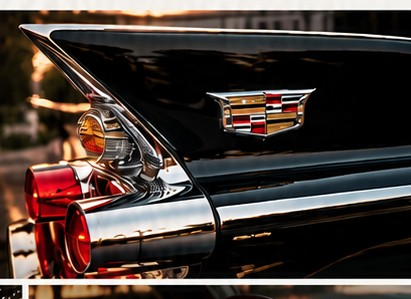

A Passion for Automotive Heritage
Castle Auto is built around an appreciation for automobiles with character, history and enduring design. Our collection focuses on distinctive American vehicles, with a particular appreciation for Cadillac.
This first website version is intentionally simple and collector-focused. Final company history, credentials and collection philosophy can be added after client approval.
